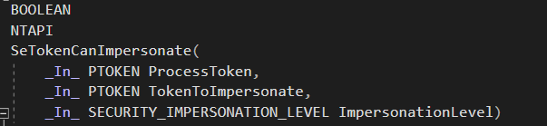
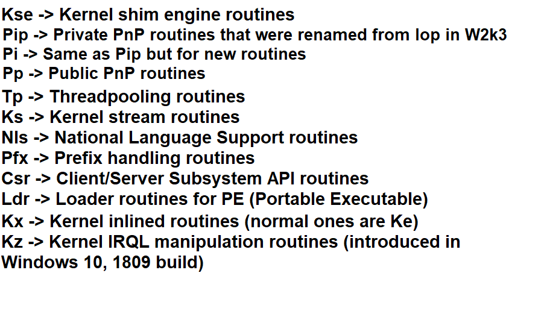
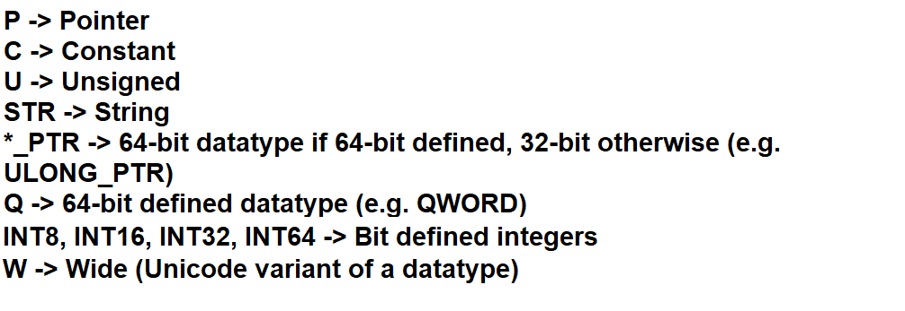
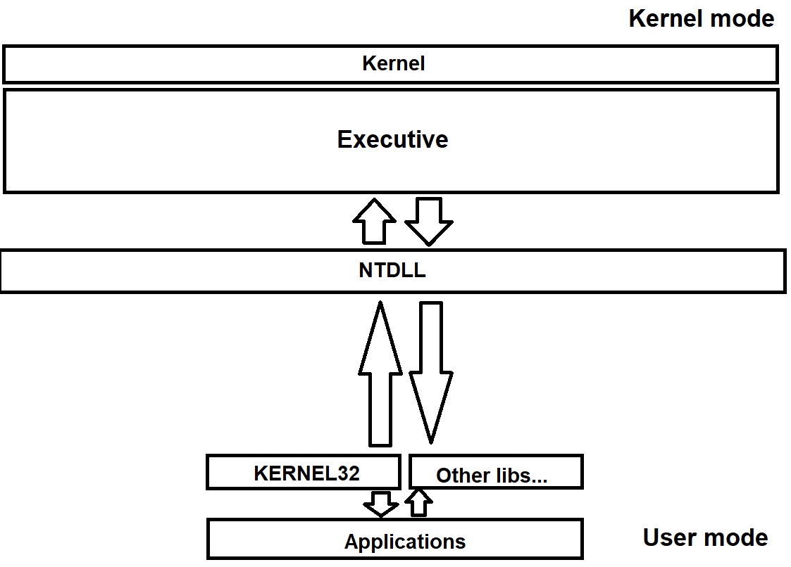
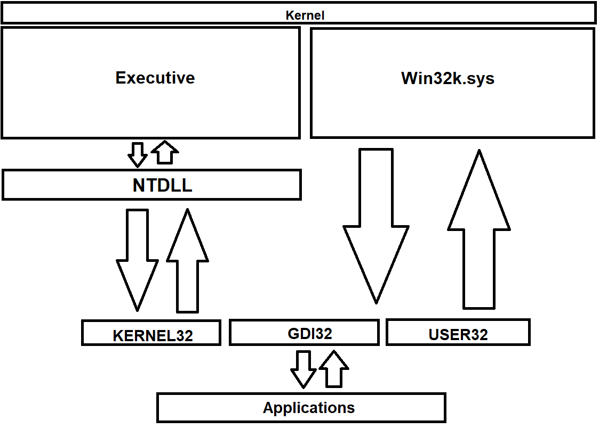
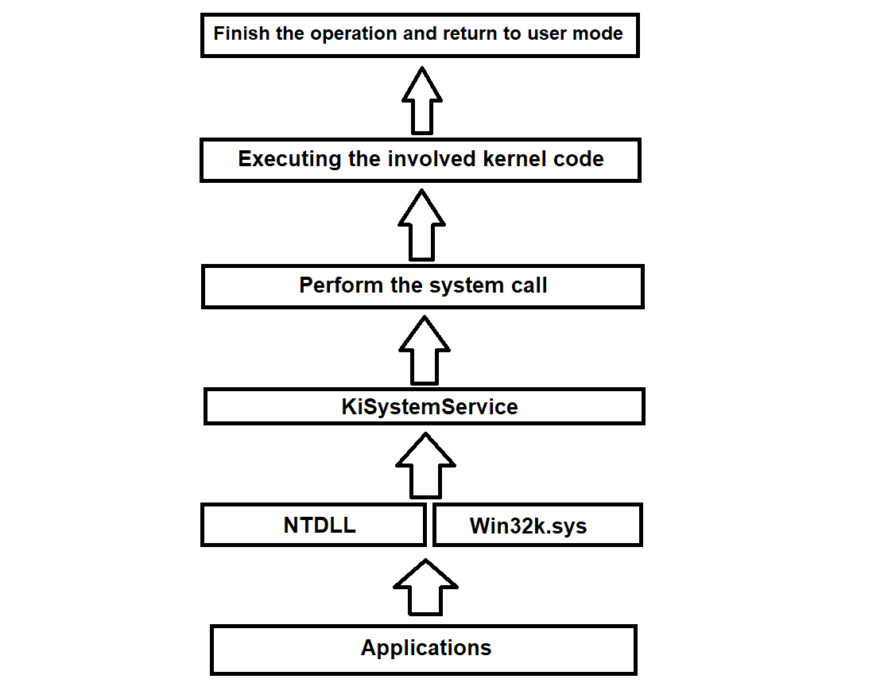
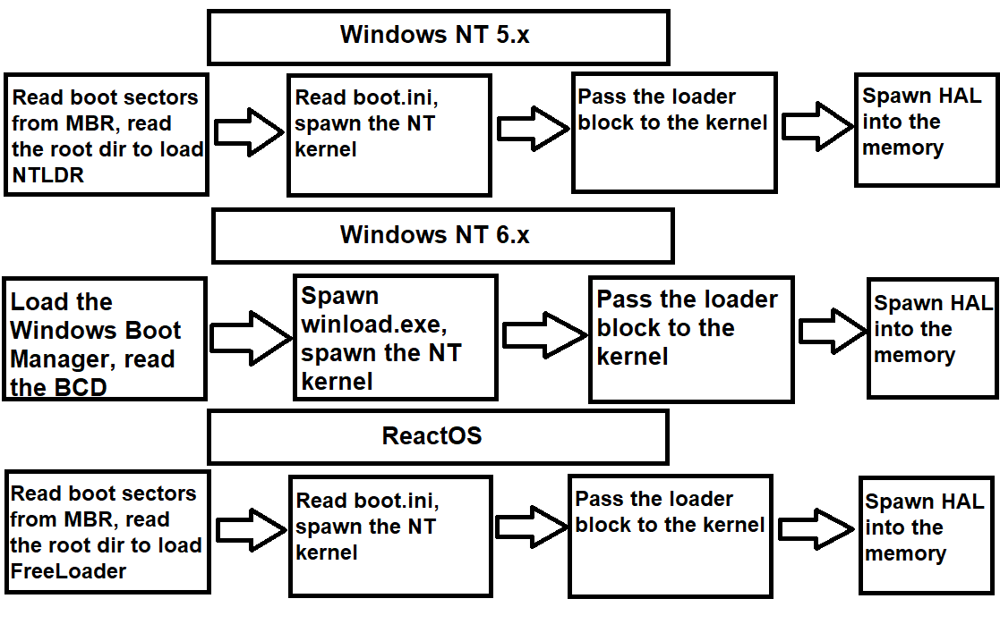

In this chapter we'll cover some further topics about the NT kernel, namely the system calls interface in NT, the basic data types used, function conventions and syntax topology of the prefix routines and the startup and shutdown mechanism procedure of the kernel.
The more you explore around the kernel you may find a plethora of functions across different components of the kernel that adhere to a set of rules regarding function prefixing. Consider this as an example:

It can be quite alien at first as you may were probably getting used to POSIX call interface syntax like write() or read(), but in reality it makes things easier to understand. Concerning the kernel's layered nature, Microsoft had to organise a set of syntax
conventions for the kernel to meet the design principles of the kernel, which such syntax rules regarding function prefixes got adopted in ReactOS as our aim is to have a compatible and interoperable operating system both
at API and ABI levels. This syntax interface that both Windows and ReactOS follow can be explained in this screenshot.
In case it's still confusing to you, I'll further explain detail by detail each case that are seen in the screenshot.
function_attribute -- Not every function in the kernel comes with it, but some do. The function attribute is a compiler specific that instructs the compiler that the function behaves in a certain
pattern or way. DECLSPEC_NORETURN in this example means that the function never returns and thus the code calling the said function is unreachable, that is, it has no end. Some examples of attributes
can be found in this header within ReactOS source code.
function_data_type -- This is the obvious one, as each function must have a data type that represents the function itself. The NT API (and consequently the Windows API as well) come with a collection of data types.
function_call_convention -- Similar to the function attribute, the calling convention is a mechanism scheme that judges how a function returns the value, how are the parameters treated and where do they come from and what's the relationship between this function
and the others. For instance, NTAPI is a Microsoft specific standard declaration calling convention which means the routine in question belongs to the NT API (in the Windows world however, the convention is WINAPI).
Prefix & Action & Suffix -- The basic rule when writing a name of the function is that every routine must come up with a prefix that is tied to the respective module, the purpose of the function (hence the action which is the combination of a verb and subject
such as NtQueryInformationToken or vice-versa) and a suffix. The suffix usually consists of Ex which means that the routine is an extension of the original one that adds more functionality in code.
This is for the sake of preserving backwards compatibility with the older API calls, so that early versions of software that use such APIs can still benefit of the older function calls whereas the new software
can benefit of using the newer/extended ones.
p (private) -- A private routine, as the name implies, is a function that is only used within the module's file itself and cannot be used outside of that file. Think of it like a static defined function for example, where the scope is visible only on that file. Nearly
every component of the Executive take use of this naming, an example of such a private routine is SepCreateTokenLock.
i (internal) -- Same as the private routine, that it cannot be used outside of the respective module's file. Only one module of the Executive adopts such naming and that is the Memory Manager and the separate entity, the Kernel. Examples of routines are KiPcToFileHeader and
MiInitializePoolEvents.
f (fastcall routine) -- A fastcall routine is a function whose parameter arguments are passed to registers, whenever possible. This is a mere slight optimisation, if used properly. Notable modules that implement
fastcall functions are the Object and I/O managers. This naming syntax can be used alognside with private or internal routine naming. Examples of functions are IofCallDriver and ObfReferenceObject.
It's worth noting however that not all of the functions declared with fastcall convention are prefixed as such.
This prefix naming scheme doesn't apply only to the NT kernel but to the whole infrastructure space in the NT world, including the base kernel services and without a doubt, the NTDLL. Here are some other examples of prefixes notably known in Windows.
Previously we've talked about the NTAPI calling convention which is the standard for every function belonging to the NT API. Albeit even the API itself is further divided into several sections based on different calling conventions that represent them. Here I'll show you some of those function calling conventions and explaining their purpose.
NTHALAPI -- Denotes that the functions belong to the HAL API. The following routines can be imported.
NTKERNELAPI -- ReactOS specific. Denotes that the functions belong to the kernel. The following routines can be imported.
NTKRNLVISTAAPI -- ReactOS specific. Same as NTKERNELAPI but with the difference that such routines declared with this convention belong to the NT Vista+ APIs.
NTSYSCALLAPI -- Denotes that the functions are NT system calls.
NTSYSAPI -- Same as the NTSYSCALLAPI calling convention.
The NT code infrastructure, as well as the whole code of Windows (and ReactOS) have a defined set of data types on its own. Whether it's DWORD, BOOL, HFONT and such, these data types are ominous in the whole ecosystem of the source code base. For a list of data types used in Windows/ReactOS, you can check it here.
Enough said, here are some of the data types widely used in the kernel:
BOOLEAN -- Boolean type value.
HANDLE -- A handle.
ULONG -- Unsigned long, integer.
UCHAR/CHAR Unsigned and signed (other variant) character.
PSTR/PWSTR -- Pointer to a string (and the Unicode variant).
NTSTATUS -- A NT status code value. Both the kernel and kernel mode drivers return a NT status code to indicate the condition of an operation by a function. For a list of complete NTSTATUS codes, check here.
What is known about is that data structures are widely used across the kernel to abstract the kernel data. A notable structure is LIST_ENTRY for doubly linked lists. Keep in mind that not every data type is used in the kernel, BOOL being an example. Even though BOOL is also a boolean value, this is strictly used in Windows API only and not NT! For this reason, only BOOLEAN must be used in the kernel. Here's a quick and summarised graph of the data type syntax structure.
In order for an application to complete an operation at request of a user within userland, applications call the documented API functions that in turn such functions invoke the system calls. System calls are a mechanism where an application code has to complete the said operation by requesting a specific service from the kernel. Once the kernel request has succeeded, the control goes back from kernel to user mode to the application itself. The mechanism of system calls ensure that a linear execution flow is respected and that no violations occur when going from user to kernel mode. Such violations are guarded by user mode probing protection checks and whatnot. In case a violation occurs on one of the checks, ReactOS/Windows notices that and won't go through further in the kernel space, thereby faulting the requested procedure prematurely. The general execution flow can be explained in this graph as follows:
The component that plays an ubiquitous role when it comes to system calls and the general flow of execution of such calls is, without a doubt, the NTDLL itself. NTDLL is the principal system call interface in NT, where every NT system call is exported to that library. NTDLL acts like a sort of an invisible wall between user and kernel mode, where the application literally has no idea of the inner guts or operations that arise in kernel mode. Even if NTDLL itself resides in user mode, this module plays an important role in this regard. Sometimes NTDLL is referred as the Native API. NTDLL exports various routines but the system calls that we're taking into account here are prefixed with Nt and Zw.
With other libs... I'm talking about other libraries that Windows provides but KERNEL32 is what we're focusing on primarily. Kernel32.dll offers synchronisation, thread management, process creation/termination, I/O, mailslots and various routines. KEEP IN MIND that KERNEL32 doesn't refer to the kernel itself but it's a Win32 library with all of the function APIs that eventually depend on system calls in NTDLL which call the kernel to complete their requests. Often people make the confusion that Kernel32.dll refers to the kernel itself which is absolutely wrong.
Nt and Zw calls are, in essence, doing the same thing. As a matter of fact, Windows and ReactOS have system calls with such prefixes but with literally same names, e.g. ZwCreateKey and NtCreateKey. This might create some confusion and the programmer would think
of using either system call, however, the prefixes do actually have a meaning in terms of semantics and it's recommended that you should understand these before writing NT related code.
Nt prefixed system calls have user mode protection checks from illicit and erroneous data that come from user mode. Userland is always treated as a space that can never be trusted, and the NT kernel must control that everything that from comes user mode has to be probed and validated. The operation request is aborted if such data cannot be validated for whatever reason. The processor execution is mode kept as is and it's not altered by the system service.
Zw prefixed system calls whereas are mere stubs. Yes, in general these calls don't do much other than calling the Nt equivalent ones to perform the respective operations. BUT, whilst the Nt system calls have user mode protection checks, the system service disables such protection for Zw equivalent stubs, that is, the calls don't go through user mode validation. If the processor mode is user mode, within a Zw call the processor mode is modified to KernelMode later. This distinction is very important to understand, as security can be compromised if the system calls are misused. You should call the Zw equivalent functions ONLY in kernel mode whereas the Nt ones in user mode ONLY.
Interestingly enough, not every system call follows the route to NTDLL. For instance, the system calls that deal with graphics and window management are NtGdi and NtUser. These calls don't go through NTDLL but instead to Win32k.sys which is the kernel backend of the Windows subsystem environment. Win32k comes up with its own system call table, called W32pServiceTable, and that table follows a rule for system calls to be mapped to respective kernel mode routines in Win32k. If we further modify the previous graph a bit, we'll get something like this as follows:

All the system calls are handled by SSDT, which is the System Service Descriptor Table. SSDT is a dispatch table infrastructure that is responsible for handling the system calls and the execution flow to kernel mode from user mode. Although we'll explain thoroughly in details in the future
about SSDT and its way of working, I'm going to explain briefly how KiSystemService works.
KiSystemService is an internal kernel function that is part of SSDT mechanism which deals with system servicing. The function copies the parameter arguments from the user stack, decodes the system call number based on the system service index and performs the selected system call, among
other stuff. Each architecture supported in Windows and ReactOS have their own KiSystemService implementation. If the ID service index does not correspond to the one from NT system call table, the calling thread where the system call is about to be invoked is converted to a GUI thread and the service call
map is set to the one from Win32k instead. The function delivers an APC (asynchronous procedure call) where the calling thread execution is done in an asynchronous manner. However if APC execution is not linear, that is, the thread whose asynchronous execution has completed and exited from the specific code region but with
normal kernel APCs disabled and another thread that was in queue by the scheduler to wait and enter into APC mode, the function issues a bugcheck of APC_INDEX_MISMATCH. This usually happens, for example, when a call of KeEnterCriticalRegion has been invoked which disables normal APCs but the calling thread
has forgotten to re-enable the APCs back with KeLeaveCriticalRegion.
With that being said, here's a summarised graph of what exactly happens when an application wants to do something through system calls.
In this section of the article I'm going to explain the procedure of the startup and shutdown of the NT kernel. With that said, let's get started.
What is obvious for any operating system is that the startup begins first with the bootloader. When the boot partition sectors are read, the bootloader is loaded into the memory and the boot control goes further by spawning the kernel. In Windows, the name of the bootloader is called Ntldr but with the introduction and continuation of NT 6.x versions of the kernel, NTLDR has been split into Windows Boot Manager and a process executable called winload.exe. The boot process pretty much goes as follows as you can see in the graph:
The boot process between ReactOS and Windows NT 5.x editions is roughly the same. In ReactOS, the bootloader that takes care of the initial boot phase is FreeLoader (or sometimes called FreeLdr). When FreeLoader has been invoked and reads the boot.ini file which is a crucial file that stores boot initialisation data, a parameter loader block that was initialised by the bootloader is passed to the kernel after the kernel has been loaded into the memory. The loader block looks as follows:
typedef struct _LOADER_PARAMETER_BLOCK
{
LIST_ENTRY LoadOrderListHead;
LIST_ENTRY MemoryDescriptorListHead;
LIST_ENTRY BootDriverListHead;
ULONG_PTR KernelStack;
ULONG_PTR Prcb;
ULONG_PTR Process;
ULONG_PTR Thread;
ULONG RegistryLength;
PVOID RegistryBase;
PCONFIGURATION_COMPONENT_DATA ConfigurationRoot;
PSTR ArcBootDeviceName;
PSTR ArcHalDeviceName;
PSTR NtBootPathName;
PSTR NtHalPathName;
PSTR LoadOptions;
PNLS_DATA_BLOCK NlsData;
PARC_DISK_INFORMATION ArcDiskInformation;
PVOID OemFontFile;
struct _SETUP_LOADER_BLOCK *SetupLdrBlock;
PLOADER_PARAMETER_EXTENSION Extension;
union
{
I386_LOADER_BLOCK I386;
ALPHA_LOADER_BLOCK Alpha;
IA64_LOADER_BLOCK IA64;
PPC_LOADER_BLOCK PowerPC;
ARM_LOADER_BLOCK Arm;
} u;
FIRMWARE_INFORMATION_LOADER_BLOCK FirmwareInformation;
} LOADER_PARAMETER_BLOCK, *PLOADER_PARAMETER_BLOCK;
This data structure can be found here. This structure basically contains important information for the kernel, such as the details of the hardware, firmware information, lists of core drivers, the physical memory information among other stuff. Once the kernel has gathered all the required information, the bootloader finally passes the whole control to the kernel and the operational mode is set to protected mode from 16-bit mode. The protected mode can be either 32-bit mode or 64-bit long mode, depending on the machine.
When NTOSKRNL gains total control, the kernel is now in charge of loading its Executive components. It does that thorough a linear procedure called phases, where Phase 0 is the early boot phase initialisation in the
kernel and Phase 1 is the second phase, the continuation of the early boot phase which deals with the rest of Executive components loading. The Phase 0 mainly deals with basic yet very important data structures initialisation that are
needed in the next phase and the whole lifetime of the kernel. The component that deals with the initialisation of the whole Executive is the actual Executive component itself. The kernel main startup point, the KiSystemStartup, calls
HalInitializeProcessor and KiInitializeProcessor for each logical processor present. During Phase 0, the interrupts are disabled.
The function that is responsible for Phase 0 management is ExpInitializeExecutive. Initially HAL is in charge of the initialisation at first by calling HalInitSystem. The HAL initialisation routine ensures that there's consistency
between the HAL itself and the kernel, otherwise a bugcheck of MISMATCHED_HAL is issued. Later on, HAL initialises the PIC, the clock and sets the hardware CMOS spinlock. Now ExpInitializeExecutive can execute each Phase 0 initialisation
routines of each component of the Executive, in the following order: memory manager, object manager, security reference monitor manager, process manager and PnP manager.
After the Phase 0 is done, Phase 1 of the phase initialisation procedure begins. The Phase 1 is a relatively complex process as it takes up a major chunk of the whole phase initialisation process. The initialisation goes as follows, in order:
1. Enable intterupts -- As I've told above that the interrupts are disabled in the Phase 0, now HalInitSystem is invoked to enable and accept interrupts from other devices.
2. Splash screen startup -- The boot video driver (Bootvid.dll) is loaded into the memory address space and the splash screen is displayed.
3. Power manager initialisation -- The phase 1 of the module is initialised.
4. System time initialisation & processor initialisation -- The system time is initialised and used as the time the machine booted up. In addition, the rest of processors are loaded and in execution, if the system is a multiprocessor one.
5. Namespace root directory & DOS device name mapping creation -- The namespace directory (\) and DOS device name mapping are being created. On Windows XP/2003 such device mapping is \Global??.
6. Executive object types creation & scheduler initialisation -- Executives objects (timers, mutexes, semaphores, et al) are being created and scheduler internal data structures are being initialised.
7. Security directory creation -- SRM creates the \Security directory and added to the main namespace of the object manager.
8. Sections & system worker threads initialisation -- The memory manager is tasked to initialise the section object and system worker threads.
9. NLS & NTDLL initialisation mapping -- NLS and NTDLL are being initialised and further mapped into memory address space.
10. Cache controller initialisation & registry directory creation -- The cache manager begins to initialise the internal data structures and its worker threads and the configuration manager creates the \Registry directory and added to the
main namespace of the object manager.
11. PnP BIOS and LPC initialisation -- PnP BIOS calls are being invoked and the local procedure call module creates the LPC object.
12. I/O initialisation -- The I/O manager initialisation begins. The module is tasked to initialise its internal structures, worker threads, the core drivers one by one and whatnot. This procedure is one of the most complex ones in the phase initialisation.
13. Power manager data structures initialisation -- The power manager module is tasked again to initialise the rest of the internal data structures.
After all of these operations have completed successfully, the final part of the phase initialisation is the Session Manager Subsystem process. The phase initialisation procedure makes sure that SMSS is still running and it hasn't been terminated prematurely. If that's the case, the system issues a bugcheck of SESSION5_INITIALIZATION_FAILED. The number 5 in the bugcheck means that the initialisation procedure waits 5 seconds for SMSS to respond. If those 5 seconds have elapsed, it means that SMSS is still alive. Otherwise the procedure thread is alerted and this bugcheck is issued. Now the kernel is fully loaded and operational!
The shutdown of the kernel usually takes place from the userland when a user wants to shut down the system or a program requesting a system shut down. Although in this section of the article we'll only talk about the shut down procedure of the kernel when the system is signaled that a shut down request has to be done.
The function that is responsible for power shut down management is NtSetSystemPowerState. The system call issues an important request to the I/O manager to send I/O power packets
to all of the device drivers loaded in memory that the system is about to suspend. This gives an opportunity to such device drivers to complete their respective operations before the system shuts down. Furthermore, the configuration manager is notified
to flush all unsaved data work in the registry to the disc. Afterwards the memory manager writes the modified pages back to their respective files. And finally, the system shutdown control goes to HAL itself, where interrupts are disabled and the processor
is halted. The shut down mechanism implementation at HAL level differs between each architecture.
{kind=link}
{kind=link}
{kind=link}
{kind=link}
{kind=link}
{kind=link}
{kind=link}
{kind=link}